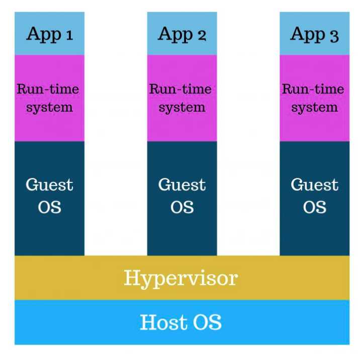
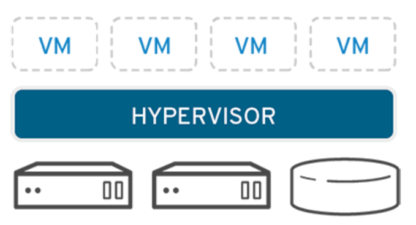

Virtualization is the process of creating a software-based or virtual version of something. This technique allows developers to run multiple operating systems in different virtual machines on a singular physical hardware system. A software called hypervisor makes this possible. It allows a user to split one system into separate environments known as virtual machines (VMs). The VM relies on the hypervisor's ability to separate the machine's resources.
Hypervisors make virtualization feasible. The physical hardware, when used as a hypervisor, is called the host, while the many VMs that use its resources are guests. The hypervisor treats resources; like CPU, memory, and storage as a pool that can be easily reallocated between existing guests or to new virtual machines. While the hypervisor gives each VM allocated resources, the physical hardware still does the execution.
There are two types of hypervisors: Type 1 and Type 2. Type 1 runs directly on the host’s hardware to manage guest operating systems. It takes the place of a host operating system and VM resources are scheduled directly to the hardware by the hypervisor. It is most commonly used in an enterprise data center or other server-based environments. Type 2 is a hosted hypervisor and is run on a conventional operating system as a software layer or application. It is best for users who want to run multiple operating systems on a personal computer.

Network Virtualization separates a network into multiple parts which makes it more manageable. It combines network hardware and software into a singular virtual network. this involves manage IPs, switches, and VLAN tags.
Storage Virtualization pools physical storage from multiple network storage devices into a single storage device, managed from a central server.
Data Virtualization consolidates data that is spread across multiple networks and allows user to know how it is formatted or where it is located.
Desktop Virtualization allows users to access any desktop remotely from any location and on any device.